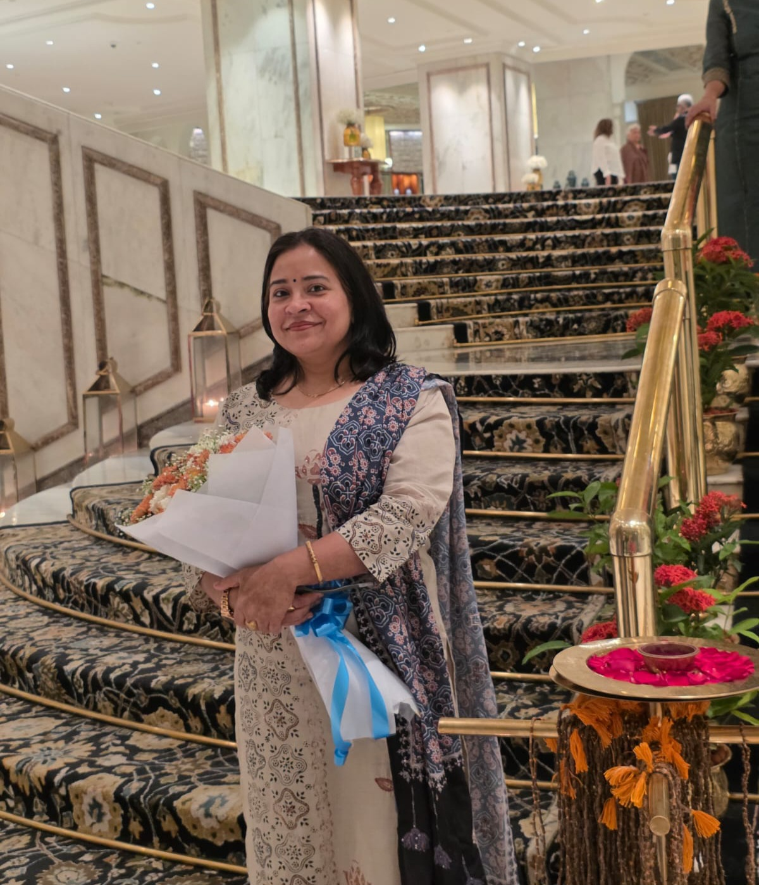

Professional Profile
Archaeological Survey of India

Assistant Superintending Archaeologist
Archaeological Survey of India (ASI)
An archaeologist with 21 years of professional experience in the field of archaeology. Her areas of work include excavation, exploration and epigraphy.
Dr. Deepti Agnihotri is an archaeologist serving as an Assistant Superintending Archaeologist in the Archaeological Survey of India. With 21 years of professional experience, her work encompasses excavation, exploration and epigraphy, contributing to the study and understanding of India's archaeological heritage.
Her academic and research contributions include work relating to the Satavahana period, inscriptions and archaeological studies.